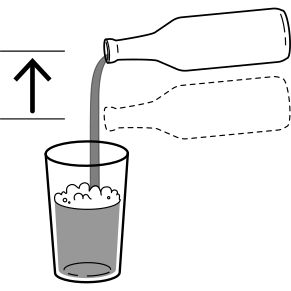

Un’ipa che fin dal primo sorso, riempie la bocca di note floreali e agrumate che tendono al mandarino, lime
e arancio unendosi all’amaro persistente, creando una bevuta importante ma anche pulita.
Come servirla
Versare con il bicchiere a 45 gradi fino a due terzi alzando poi la bottiglia per la parte finale in modo da
formare una schiuma perfetta.

Come conservarla
Tenere in un luogo fresco inferiore a 10°C e al riparo dal sole.
Come e' nata
“ipa corposa e aromatica che lascia il palato pulito per una successiva bevuta”, e' l'obiettivo di questa
birra.